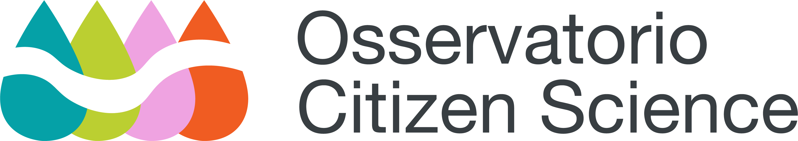
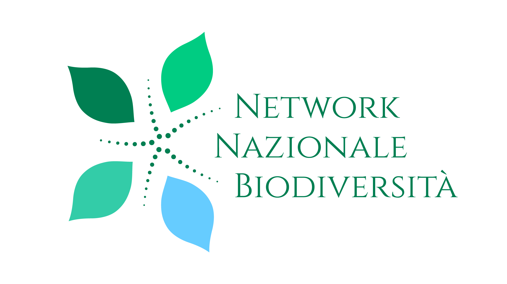
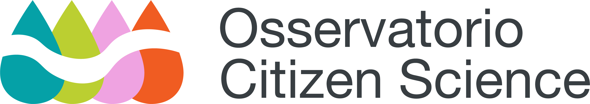
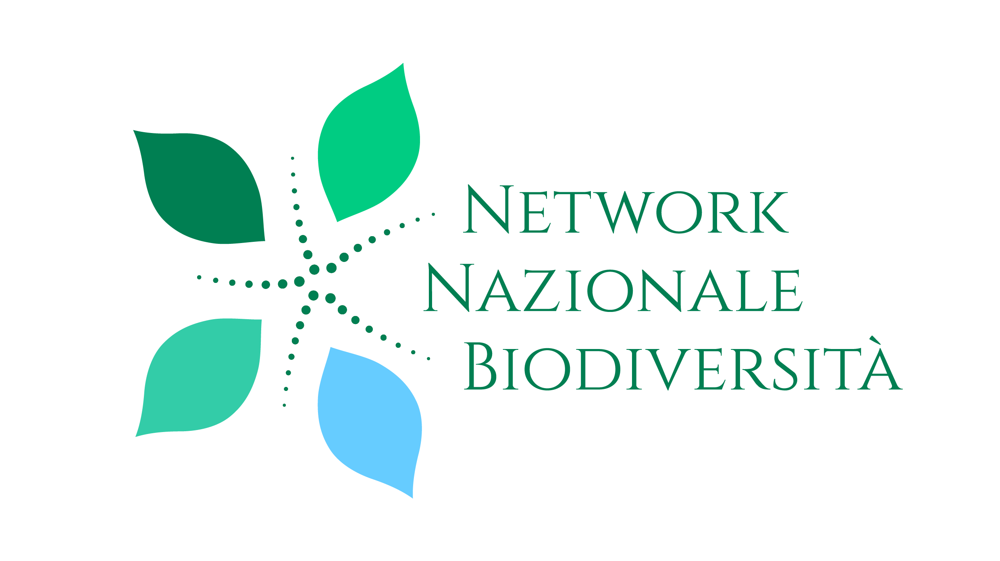

Wetlands Atlas
Wetlands Atlas mostra le specie presenti nelle oasi e zone umide del Consorzio Acque Risorgive del Veneto e fornisce una guida
per visite sul posto al fine di condividere con tutti l’importanza
della biodiversità.
Progetto realizzato all’interno del laboratorio di Information Design del Corso di laurea Magistrale in Interaction & Experience Design dell'Università della Repubblica di San Marino. Docenti: Giorgio Uboldi, Marco Luitprandi. In collaborazione con l'Osservatorio Citizen Science, ISPRA Network Nazionale Biodiversità e il Consorzio di Bonifica Acque Risorgive.
 


